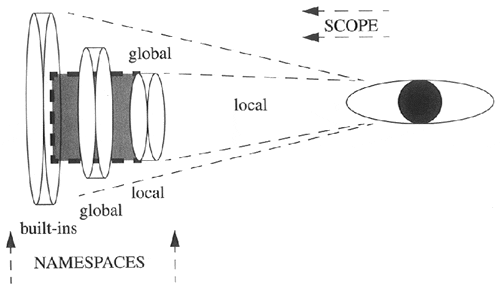

| < BACK | Make Note | Bookmark | CONTINUE > |
Namespaces
A namespace is a mapping of names (identifiers) to objects. The process of adding a name to a namespace consists of binding the identifier to the object (and increasing the reference count to the object by one). The Python Language Reference also includes the following definitions: "changing the mapping of a name is called rebinding[, and] removing a name is unbinding."
As briefly introduced in the last chapter, there are either two or three active namespaces at any given time during execution. These three namespaces are the local, global, and built-ins namespaces, but local namespaces come and go during execution, hence the "two or three" we just alluded to. The names accessible from these namespaces as dependent on their loading order, or the order in which the namespaces are brought into the system.
The Python interpreter loads the built-ins namespace first. This consists the names in the __builtins__ module. Then the global namespace for the executing module is loaded, which then becomes the active namespace when the module begins execution. Thus we have our two active namespaces.
NOTE
The __builtins__ module should not be confused with the __builtin__ module. The names, of course, are so similar that it tends to lead to some confusion among new Python programmers who have gotten this far. The __builtins__ module consists of a set of built-in names for the built-ins namespace. Most, if not all, of these names come from the __builtin__ module, which is a module of the built-in functions, exceptions, and other attributes. In standard Python execution, __builtins__ contains all the names from __builtin__. The only time there is a difference is when executing in restricted mode. (Restricted execution is covered formally in Chapter 14.) In restricted mode, __builtins__ only consists of a subset of the attributes from __builtin__ which can be accessed from within a restricted environment.
When a function call is made during execution, the third, a local, namespace is created. We can use the globals() and locals() built-in functions to tell us which names are in which namespaces. We will discuss both functions in more detail later on in this chapter.
Namespaces vs. Variable Scope
Okay, now that we know what namespaces are, how do they relate to variable scope again? They seem extremely similar. The truth is, you are quite correct.
Namespaces are purely mappings between names and objects, but scope dictates how or rather, where, one can access these names based on the physical location from within your code. We illustrate the relationship between namespaces and variable scope in Figure 12-1.
Figure 12.1. Namespaces vs. Variable Scope
Notice that each of the namespaces is a self-contained unit. But looking at the namespaces from the scoping point of view, things appear different. All names within the local namespace are within my local scope. Any name outside my local scope is in my global scope.
Also keep in mind that during the execution of the program, the local namespaces and scope are transient because function calls come and go, but the global and built-ins namespaces remain.
Our final thought to you in this section is, when it comes to namespaces, ask yourself the question, "Does it have it?" And for variable scope, ask, "Can I see it?"
Name Lookup, Scoping, and Overriding
So how do scoping rules work in relationship to namespaces? It all has to do with name lookup. When accessing an attribute, the interpreter must find it in one of the three namespaces. The search begins with the local namespace. If the attribute is not found there, then the global namespace is searched. If that is also unsuccessful, the final frontier is the built-ins namespace. If the exhaustive search fails, you get the familiar:
>>> foo Traceback (innermost last): File "<stdin>", line 1, in ? NameError: foo
Notice how the figure features the foremost-searched namespaces "shadowing" namespaces which are searched afterwards. This is to try to convey the effect of overriding. This is the process whereby names may be taken out-of-scope because a more local namespace contains a name. Take a look at the following piece of code that was introduced in the previous chapter:
def foo():
print "\ncalling foo()…"
bar = 200
print "in foo(), bar is", bar
bar = 100
print "in __main__, bar is", bar
foo()
When we execute this code, we get the following output:
in __main__, bar is 100 calling foo()… in foo(), bar is 200
The bar variable in the local namespace of foo() overrode the global bar variable. Although bar exists in the global namespace, the lookup found the one in the local namespace first, hence "overriding" the global one. For more information regarding scope, please go back to Section 11.8 in the last chapter.
| Last updated on 9/14/2001 Core Python Programming, © 2002 Prentice Hall PTR |
| < BACK | Make Note | Bookmark | CONTINUE > |